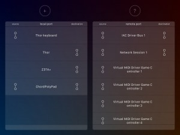
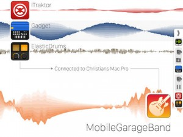

Launched within just a few weeks of each other, these specularly bland looking apps are set to change your music making world for the better if you’ve battled with the chore of getting your iOS music apps to talk to your desktop computer.
In short, these aptly titled apps allow you to send either MIDI or audio between your iPad or iPhone and a computer using the standard USB lightening cable or 30-pin cable you’d use for syncing, etc. So you can pack away your MIDI and audio interfaces, things just got a whole lot easier.
The hardest thing you’ll need to do is download the small server software on your computer which needs to run in the background for these apps to talk to your computer. Currently this is available for Mac and PC operating systems.
midimux offers transmission of MIDI data between iPad music apps and your computer. So for example, you might like to use your favourite MIDI sequencing software on your computer to command any number of synth apps residing on your iPad. No problem at all. And visa versa, you can use something like Genome MIDI Sequencer on your iPad to control the software sound modules and MIDI hardware connected to your computer. No problem either.
The magic happens by creating mirrors of the connected MIDI devices and custom virtual ports. I don’t pretend to even start knowing how that is even possible, but it works, and the end result is a smoother experience for anyone who likes working in MIDI across both platforms.
Unsurprisingly, audiomux offers much the same tasty treats only, it’s designed to transmit audio between your iPad and computer with much the same ease.
Built on the foundation of audiobus, audiomux lets you can fire up as many as 16 iOS music making apps simultaneously, and send their independent audio signals to a waiting DAW on your computer. And no surprise, you can do the same thing in verse, and send the audio sources from your computer to an audio recording app on your iPad.
Note, Audiomux only currently supports Mac. Hopefully Windows gets some love in the future.
My experience so far has been good, with no latency issues, and music apps not playing nicely with either midimux or audiomux.
Whether you need one or both of these apps, they are cheaper to buy as a bundle for $9.99
midimux
Developer: Christian Blomert
studiomux
Developer: Christian Blomert


{kind=link}
{kind=link}
{kind=link}
{kind=link}
{kind=link}
{kind=link}
{kind=link}
{kind=link}
{kind=link}
{kind=link}
{kind=link}